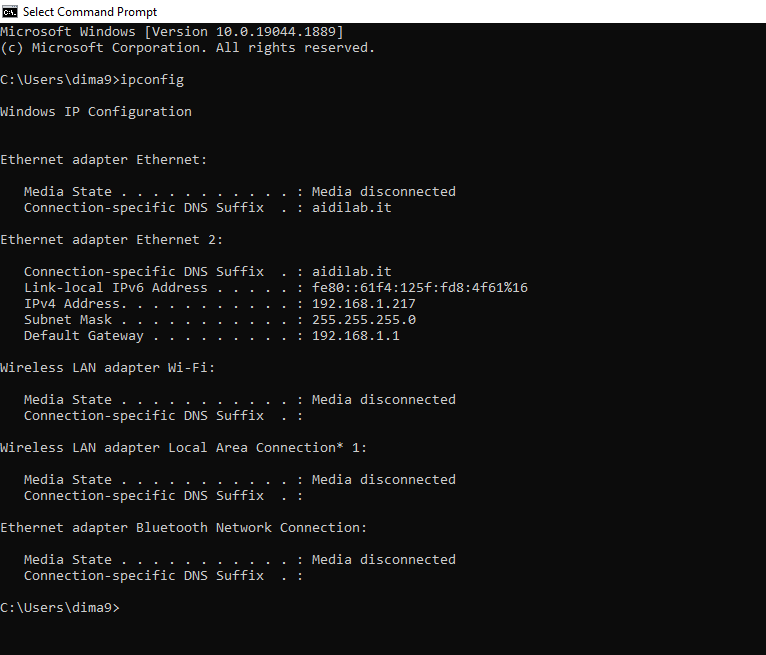

Find IP Address
Overview
We’ll find out how to discover the IP address associated with your UDOO VISION. The IP address is a number that uniquely identifies a device in a network. It will be useful to know which IP your UDOO VISION is assigned to for connecting to it remotely. There are various way to find the private IP Address, so let’s get started.
First method: Command Line
If your UDOO VISION is connected to a screen, you can simply find the IP Address of the board using the tool exploited by the OS you are using.
On a Linux distribution open a terminal and type:
ip a
This command will output informations related to both Ethernet and Wi-Fi status, including respective IP addresses, besides the loopback address.
udooer@udoovision:~$ ip a
1: lo: <LOOPBACK,UP,LOWER_UP> mtu 65536 qdisc noqueue state UNKNOWN group default qlen 1000
link/loopback 00:00:00:00:00:00 brd 00:00:00:00:00:00
inet 127.0.0.1/8 scope host lo
valid_lft forever preferred_lft forever
inet6 ::1/128 scope host
valid_lft forever preferred_lft forever
2: enp2s0: <NO-CARRIER,BROADCAST,MULTICAST,UP> mtu 1500 qdisc mq state DOWN group default qlen 1000
link/ether 00:c0:08:9d:8f:87 brd ff:ff:ff:ff:ff:ff
3: eno1: <BROADCAST,MULTICAST,UP,LOWER_UP> mtu 1500 qdisc mq state UP group default qlen 1000
link/ether 00:c0:08:9d:8f:88 brd ff:ff:ff:ff:ff:ff
altname enp3s0
inet 192.168.1.217/24 brd 192.168.1.255 scope global dynamic noprefixroute eno1
valid_lft 85535sec preferred_lft 85535sec
inet6 fe80::1e12:98b8:f21:ca6d/64 scope link noprefixroute
valid_lft forever preferred_lft forever
4: wlp1s0: <BROADCAST,MULTICAST,UP,LOWER_UP> mtu 1500 qdisc noqueue state UP group default qlen 1000
link/ether 3c:58:c2:fa:6c:b6 brd ff:ff:ff:ff:ff:ff
inet 192.168.0.104/24 brd 192.168.0.255 scope global dynamic noprefixroute wlp1s0
valid_lft 7192sec preferred_lft 7192sec
inet6 fe80::571d:74a6:d6c7:ed4b/64 scope link noprefixroute
valid_lft forever preferred_lft forever
In this example the Ethernet IP address is 192.168.1.217 and the Wi-Fi IP address is 192.168.0.104.
Alternatively, with older Linux distro, you can also use the command ifconfig.
A quick way to find your IP address in Windows is by running the ipconfig command in a Command Prompt window. You’ll see your IP address in the IPv4 Address row beneath the name of your connection.
Using Windows 10 you can right-click the Start button. In the Menu appeared click on Command Prompt an invoke the ipconfig command.
-->
{kind=link}
Second method: use the Fing - Network Tools Mobile App
Fing is a network scanner app, which will help you to discover every device connected into your network. Simply go to the Android or Ios market, download and launch it. If UDOO VISION is properly connected to the same network your phone is (whether via Wi-Fi or ethernet), you should see it and discover its IP address.
Link to the stores: Android Google Play and IOS App Store
You'll find UDOO VISION connected through the GB Ethernet identified as Seco.
If the board is connected to the Network through Intel Wi-Fi/BT module you'll find it identified as Intel
Third method: use your Router control panel
Just connect to your router control panel: open your browser and type the IP address of your router. Usually this is 192.168.1.1 or 192.168.0.1 or 192.168.1.254.
Once you’re prompted with a user and password login box, log in (if you’ve not changed them, there are good chances they would be: admin as both user and password).
Navigate to the devices list, which can be called also status or manteinance, you should see your UDOO VISION with his IP address.
Here you are. Now that you know your IP address, you can easily access your UDOO VISION.